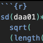

daa01<-c(5,6,3,4,3,4,5,4)
sum(
(daa01-mean(daa01))^2
)[1] 7.5Nobukuni Hyakutake
2023-02-10

\(\displaystyle\sum^{n}_{i=1}(x_i-\overline{x})^2\)
\(s^2=\frac {\displaystyle\sum^{n}_{i=1}(x_i-\overline{x})^2} {n}\)
or
\(s=\sqrt{\frac {\displaystyle\sum^{n}_{i=1}(x_i-\overline{x})^2} {n}}\)
or
\(C.V.=\frac {s} {\overline{x}}\)
\(r=\frac {\displaystyle\sum^{n}_{i=1}(x_i-\overline{x}) (y_i-\overline{y})} {\sqrt{ {\displaystyle\sum^{n}_{i=1}(x_i-\overline{x})^2}} \sqrt{ {\displaystyle\sum^{n}_{i=1}(y_i-\overline{y})^2}}}\)
---
title: "統計学基礎"
author: "Nobukuni Hyakutake"
date: "2023-02-10"
date-format: "iso"
categories: [STATISTICS]
image: "sd.png"
---

## 偏差平方和
$\displaystyle\sum^{n}_{i=1}(x_i-\overline{x})^2$
```{r}
daa01<-c(5,6,3,4,3,4,5,4)
sum(
(daa01-mean(daa01))^2
)
```
## 分散 (標本分散)
$s^2=\frac {\displaystyle\sum^{n}_{i=1}(x_i-\overline{x})^2} {n}$
```{r}
sum(
(daa01-mean(daa01))^2
)/
length(daa01)
```
or
```{r}
var(daa01)*(length(daa01)-1)/length(daa01)
```
## 標準偏差(標本分散の平方根)
$s=\sqrt{\frac {\displaystyle\sum^{n}_{i=1}(x_i-\overline{x})^2} {n}}$
```{r}
sqrt(
var(daa01)*(length(daa01)-1)/length(daa01)
)
```
or
```{r}
sd(daa01)*
sqrt(
(length(daa01)-1)/length(daa01)
)
```
## 変動係数
$C.V.=\frac {s} {\overline{x}}$
```{r}
sd(daa01)*
sqrt(
(length(daa01)-1)/length(daa01)
)/
mean(daa01)
```
## 相関係数
$r=\frac {\displaystyle\sum^{n}_{i=1}(x_i-\overline{x}) (y_i-\overline{y})} {\sqrt{ {\displaystyle\sum^{n}_{i=1}(x_i-\overline{x})^2}} \sqrt{ {\displaystyle\sum^{n}_{i=1}(y_i-\overline{y})^2}}}$
```{r}
daa02<-c(7,8,3,5,4,3,8,6)
cor(daa01,daa02,method="pearson")
```
```{r}
plot(daa01,daa02)
```
## 正規分布
```{r}
curve(dnorm(x,mean=0,sd=1),from=-4,to=4)
```
## ヒストグラム
```{r}
hist(c(4,4,5,5,6))
```